Tú
Geoinquieto
Nadie mejor que tú mismo para saber quién eres. Vendrás a la GeoCamp, hablarás de GIS y disfrutarás de un día en la preciosa Asturies.

3 de octubre de 2026 · Asturias
¡Un día para hablar de GIS!
¡Regístrate!GeoCamp ES es un congreso nacional del colectivo internacional Geoinquietos.
Geoinquietos son grupos informales que se reúnen para conversar y aprender sobre cualquier tema relacionado con las ciencias de la tierra. No hay (todavía) una estructura formal por lo que cada grupo se organiza a su manera, aunque hay ciertas características comunes como son disponer de un foro de discusión, generalmente una lista de correo, y una cuenta en twitter. Puedes consultar más información en esta introducción a Geoinquietos.
La comunidad Geoinquietos siente especial afinidad por la enorme panoplia de servicios de geodatos abiertos disponibles en Internet como los servicios INSPIRE, proyectos comunitarios como OpenStreetMap y la enorme oferta de software libre de calidad profesional usada mundialmente en toda clase de servicios y aplicaciones SIG, especialmente alrededor de la comunidad OSGeo. Pero también está abierta a profesionales de geomática que trabajan con software propietario pero gustan de compartir conocimientos y aprender en grupo.
Este congreso es sin ánimo de lucro, de asistencia gratuita y autofinanciado.
Este año, el formato de GeoCamp es el de Open Space: todos los participantes toman un papel activo en la ejecución del evento para aumentar la interacción entre los asistentes de tú a tú (en lugar del modelo tradicional de conferencia de comunicación de uno a muchos) para ser capaces, con agilidad e improvisación, de satisfacer espontáneamente las inquietudes de los participantes, tanto las que traigan de casa como las que surjan durante la jornada.
GeoCamp ES nació en 2013 como el resultado de la participación en GeoCamp 2012 en Campo Maior, Portugal.
Ediciones anteriores:
No te olvides que puedes seguirnos en X (@GeoCampES) y hemos creado un grupo Telegram al que puedes apuntarte. Apúntate y comenta, participa, quéjate y ayúdanos a organizar el evento.
“”
En el OpenSpace la idea es que una persona proponga un tema sobre el que quiere conversar o que le interese, algo sobre lo que ha trabajado o tiene algo preparado y lo comparta con el resto de asistentes.
Los interesados en el tema se reunirán en la sala habilitada y uno o varios de los que hayan propuesto el tema serán los moderadores de la sesión. La idea es que fluya la conversación y los asistentes vayan navegando por el tema hacia los puntos que más interés generen.
Nadie mejor que tú mismo para saber quién eres. Vendrás a la GeoCamp, hablarás de GIS y disfrutarás de un día en la preciosa Asturies.
Disponible próximamente.
GeoCamp ES es posible gracias al esfuerzo de las entidades que nos patrocinan. Si estás interesada en ser una de ellas puedes descargar nuestra guía para patrocinar.